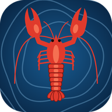

Fredningsområde for hummer
Grensene er fra Fiskeridirektoratets kartdata. Sjekk alltid gjeldende forskrift.

Da åpnes den som en app, i fullskjerm, og virker uten nett.
Bruk alltid appen fra hjemskjermen. Den har egen lagring, så teiner og fangst du markerer her i nettleseren, blir ikke med over til appen.
Dybdetall i hele meter, rundet nedover som i sjøkartet. Fete tall er grunner (grunneste punkt). Understreket tall er tørrfall over sjøkartnull.
Vises når du zoomer langt inn. Trykk i kartet for å se hva som er der. Der det ikke står noe, er bunnen ukjent. Tareskog og skjellsand er modellert, ikke kartlagt.
Et anslag ut fra forskning på hummer: mest på 10–30 m, gjerne i bratt terreng, på steinbunn med tare og der fjell møter sand. Bølger og strøm er ikke med. Vises når du zoomer inn. Din egen fangst sier mer over tid.
Logg inn for å sette teiner og registrere fangst. De lagres i kontoen din, så du har en sikkerhetskopi og får dem på alle telefonene dine. Uten innlogging kan du bare se på kartet.
Logget inn som . Teiner og fangst lagres i skyen og synkroniseres med de andre telefonene dine.
Del teiner og fangst med dem du fisker med. Alle i laget ser og kan endre alt, som én felles logg. Det du har, flyttes inn i laget.
Du er med i . Alle i laget ser og kan endre alle teiner og all fangst, men hver teine har en eier, og statistikken viser dine egne. Del koden med dem som skal bli med.
Vises på teinene dine hos de andre i laget, og deres teiner får hver sin farge på nummeret hos deg.
Personvern: hva som lagres, og hvor.
Dybdedata: © Kartverket. Ikke godkjent for navigasjon.